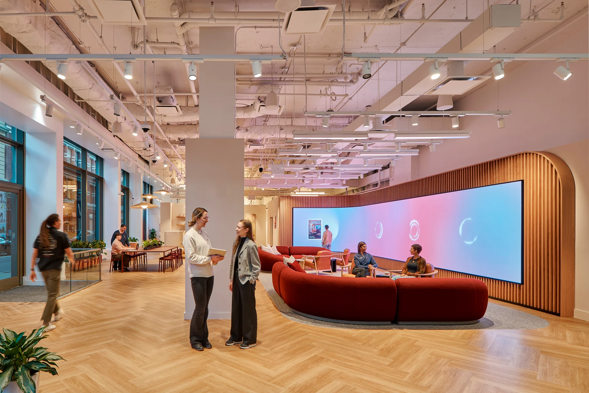
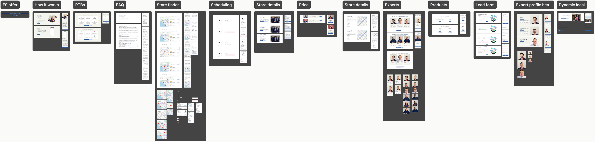
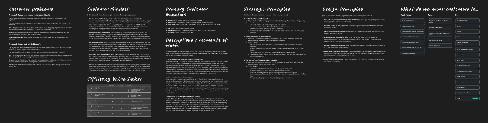
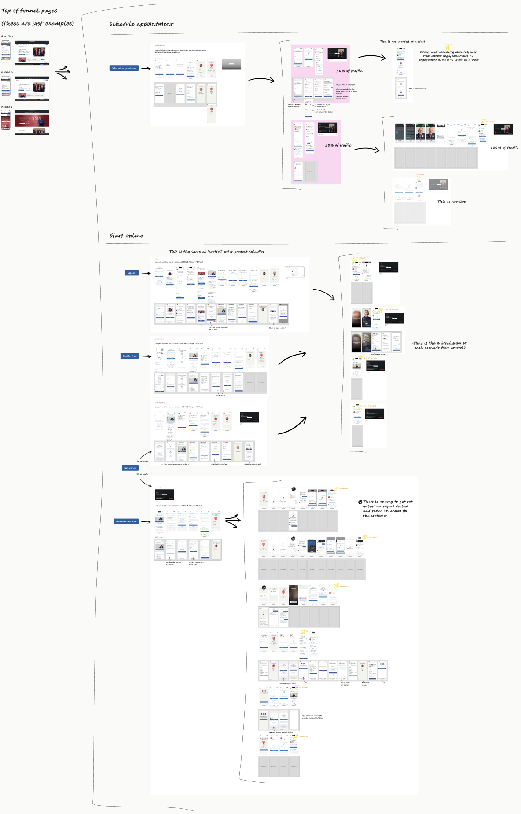
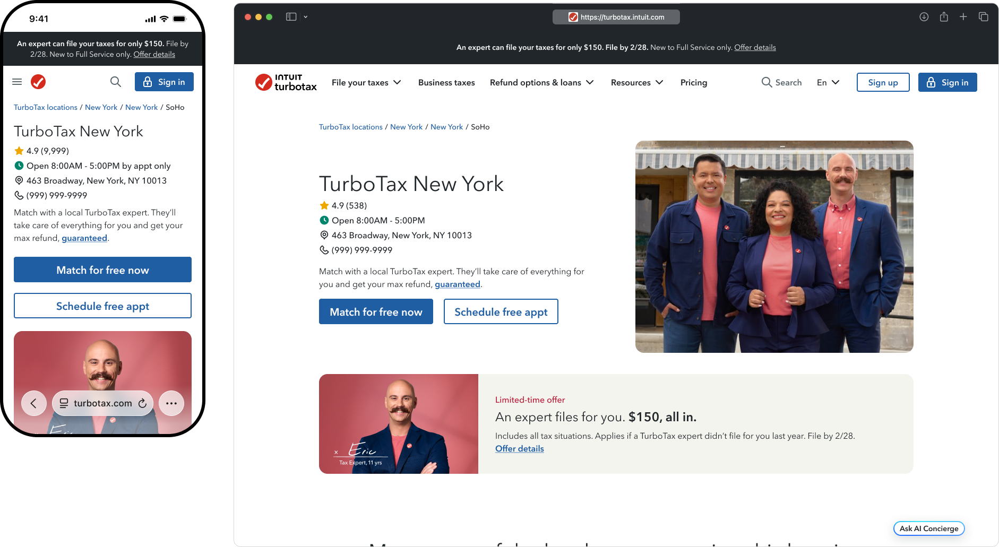
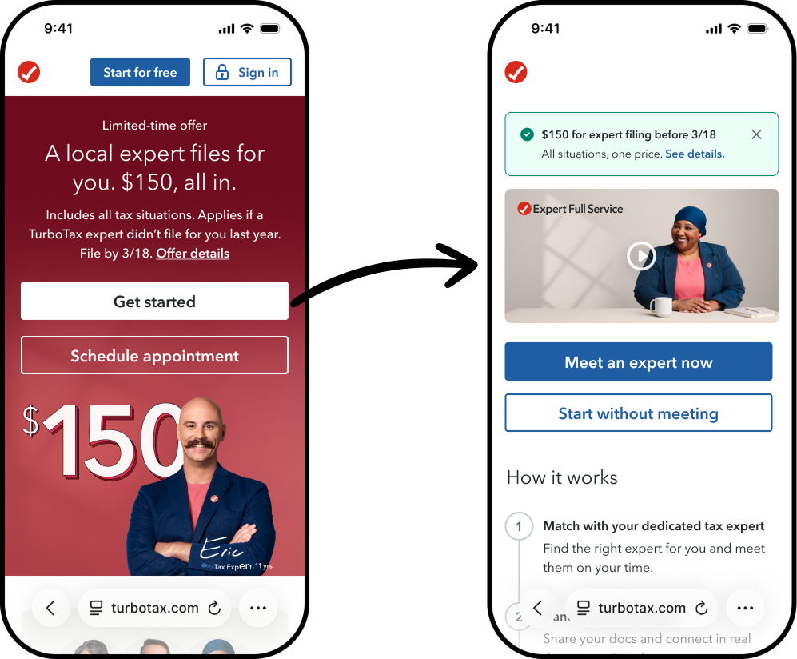
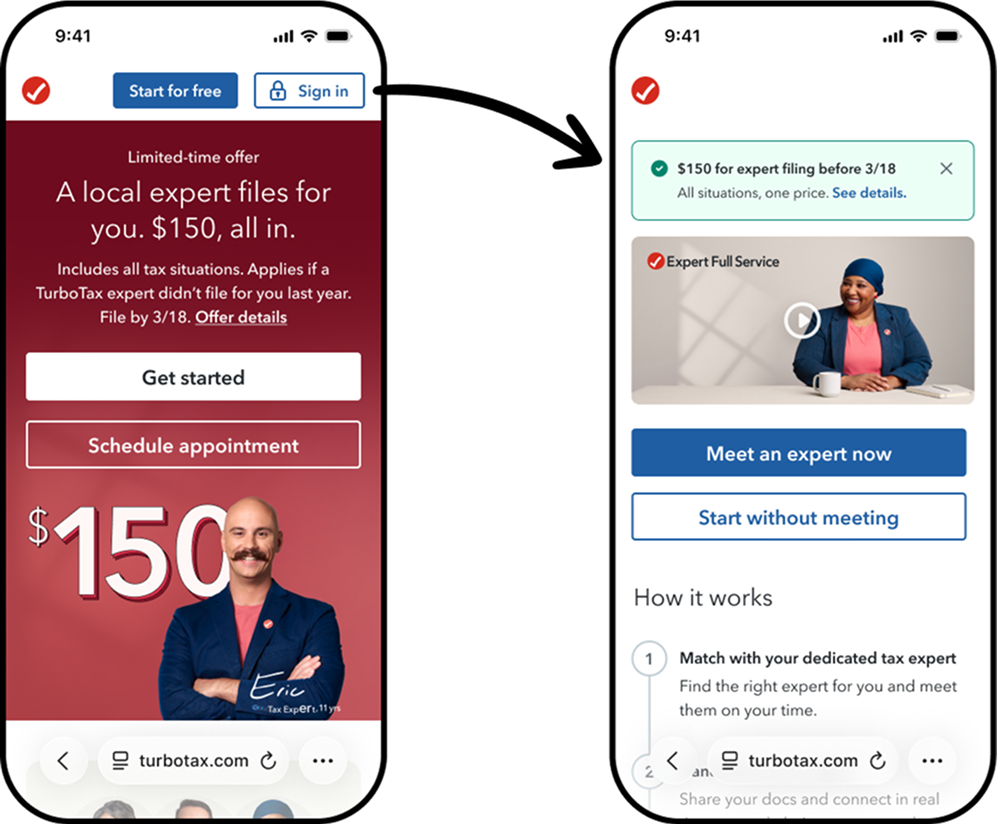

Activate Experts
How TurboTax reimagined the front door for local in-person tax help

The front door's job wasn't to persuade. It was to recognize the customer who'd already decided.
TurboTax operates 500+ branded storefronts nationwide. Each one is a fixed cost: staff, leases, local advertising written into the unit economics. The digital storefront is the front door to that network. It decides whether the customer who found TurboTax online books an appointment, calls, or keeps scrolling.
The customer arriving is what the team called an Efficiency Value Seeker: someone who has already decided to hand off their taxes. They're not comparing TurboTax to TaxAct. They're comparing it to sitting in a CPA's office. The page's job isn't to sell them on expert help. It's to recognize they've already made that decision, and not fumble the moment.
As the design lead for the AE front door, I was responsible for the entry experience of over half a million weekly visitors. Every CTA, every flow, every surface decision has direct downstream revenue consequences. Design as a precision instrument, not a finish.
This case study covers one tax season. One measurement audit that changed what the program was optimizing for. Seven tests built on that foundation. And one failure test that made everything else more credible.
Building for scale and velocity.
A modular system built for velocity
To achieve the velocity required for peak season, we had to stop building individual pages and start building a modular system. I architected the first AE component library: a single unified source of truth across every AE surface.
This wasn't aesthetic consistency. It was operational leverage. Recipe pivots that used to take weeks took days.

Driving the AE front door
With the system built, we spent the final weeks before peak standardizing the entire top-of-funnel ecosystem, from PPC landing pages to the store locator. A consistent brand promise of local expertise across every touchpoint.

The goal was not to persuade. It was to not break the decision already forming.
Our target customer wants human expertise with digital speed. They've already decided they want a tax expert. They're not comparison shopping. They're looking for confirmation they're in the right place.
The page serves two personas at once: the delegator seeking validation that the right expert is available, and the autonomous shopper seeking agency over how to proceed. Every design decision was made in service of that dual psychology.

What we were actually measuring.
Mapping every path from page to start
Before writing a single test hypothesis, I mapped every path a customer could take from an AE TOF page to a start.

Three critical findings, none of them visible from the front door
01 · Spec vs. production gaps. Multiple screens in the live product didn't match the design spec. Content was wrong, screens appeared out of order, duplicative questions across flows. Annotated and shared as a formal gap report.
02 · A dead end with no exit. In certain post-auth paths, there was no self-service exit. Users who entered had no way forward without an expert manually intervening. A critical failure invisible from the TOF.
03 · Time to start (T2S) as a structurally composite metric. Starts are captured far downstream, across experiences owned by multiple teams. Optimizing a TOF CTA for T2S alone is structurally flawed. The metric is real. The attribution is not direct. That finding restructured how every test hypothesis that followed was framed.
Field-testing choice architecture.
Test 1: Storefront
Our customers had already decided they wanted an expert. So why were we making them schedule a meeting to prove it?
The assumption: the primary barrier wasn't the product, it was process ambiguity. Appointment scheduling requires commitment to a specific time, person, and location before the customer knows who they're committing to. The hypothesis: replacing the high-friction scheduling CTA with an immediate expert-matching experience would unlock latent demand from customers who wanted expert help but were stopped by appointment friction.

Result: Recipe B was the universal winner
The only variation that lifted volume, conversion, and revenue simultaneously. ~$1.1M annualized.
Test results throughout show percentage lift above or below the control group.
The insight that wasn't in the test plan
Visitors who never clicked Match were 3× more likely to schedule. Match acted as a trust anchor for the entire page, not just an entry point. Its presence signaled that real human expertise was available, and that signal raised the conversion rate on every other action on the page.
Designing for conversion on one element changes the baseline for every other element around it. Elements don't just do the work of their own label. They set context for everything near them.
Four tests. One principle.
Test 5023: Organic LP, dual-engine discovery
We ran what looked like the same test on a different surface and got a different answer. That contradiction was the finding. The Storefront worked because intent was already named. The Organic LP is a different moment. We weren't testing two recipes. We were measuring two engines built for two different objectives.
Result: Two recipes, two engines — both deployed
Test 5012: Localization
The assumption: local content plus Match should be additive. If customers respond to expertise, they respond more when that expertise feels like it belongs to their specific market.
Localized content alone (Recipe B) won in both NY and LA. Adding Match on top diluted the gains. Recipe C delivered less than half the Full Service completion lift of Recipe B in NY (+215% vs. +643%).
New York · Recipe B winner
Result: Recipe B won — localized content alone outperformed localized content + Match
On the storefront, Match works because the customer arrived with expert intent already formed. On a category landing page, the customer is still orienting. Match asks for a commitment the page has not yet earned.
Test 5041: CTA Isolation
Leadership directed a generic Get Started CTA across all recipes to isolate the modular auth flow's performance. The intent was methodological. What the data revealed had nothing to do with the flow.
Result: Generic CTA collapsed Full Service mix — audience composition shifted
Full Service completed mix dropped 38% below control. Not because the flow was broken, because without the expert-matching signal at the entry point, the population that clicked through changed. More customers came in. Fewer were the right ones. DIY free start mix simultaneously climbed 13% above control, confirming the audience shift.
Mobile and stationary are not the same conversion environment
Mobile is roughly 88% of AE traffic but only 23% of starts. Stationary is 12% of traffic and 77% of starts. Different recipes won per device. The aggregate test result hid the real finding.
Test 5176: The failure test
We routed AE page visitors directly to the FS in-product flow, bypassing the CTA filtering step, on the assumption that a page visit signals expert intent. Both recipes missed on revenue per visitor, down 15% vs. control. Test stopped.


Result: Both recipes missed — −15% revenue per visitor, test stopped
5041 stripped the qualifying signal from the CTA. 5176 bypassed the qualifying step entirely. Two tests, same principle.
The test that failed clearly validated the framework more convincingly than any win did. A test designed to find the edges of a principle is worth more than another replication of the same finding.
Framework to deployment to principle.
End-of-season PPC: when the appointment door closes, does Match still hold?
By second peak, in-person appointments were no longer available across most markets. The question was whether replacing Schedule with Match for Free would keep expert intent in motion, or whether the surface lost meaning when its primary action wasn't available.
Result: Recipe B won — +9% revenue per visitor, Match held without appointments
Second peak: surface-by-surface deployment
Match as the primary entry point across organic, PPC, and Storefront surfaces. Schedule preserved on Expert Profile where appointments are genuinely available. The surface determined the engine.
| Surface | CTA |
|---|---|
| Organic LP | Match for free |
| PPC LP | Match for free |
| Storefront | Match + Schedule free appt |
| Expert Profile | Schedule appointment |

Scale signal: AE CTA returned $308 ARPC, $1.04M revenue, 3,371 units. Non-AE CTA on the same surface: $105 ARPC, $309K revenue, 2,936 units. Three times the ARPC from the same traffic.
End of season: traffic down. The funnel got better, not bigger.
Units up 56% vs. prior year while traffic was down 7%. The funnel converted a larger share of a smaller traffic base.
The Responsive Intent Architecture
Three engines. Three objectives. The framework in one view.
| Match Filter | Modular Post-Auth Throttle | Modular Pre-Auth Filter | |
|---|---|---|---|
| Best for | High-intent surfaces (Storefront, post-decision PPC) | Volume-driving organic surfaces | Mid-orientation surfaces (CLPs with localized content) |
| Optimizes for | Revenue quality, ARPC, FS mix | Total franchise starts, T2S volume | Self-selected entry without premature commitment |
| Trade-off | Lower top-of-funnel volume | Lower revenue per visitor | Slower commitment moment |
| Strategic role | Precision filter | Volume engine | Soft qualifier |
Three principles that came out of the season
- Deploy by device, not just by surface. Mobile and stationary web are fundamentally different conversion environments. The winning recipe is not the same for both.
- Match the mechanism to the objective. Match is the filter for FS intent. The modular auth flow is the throttle for franchise volume. Deploy the wrong engine against the wrong objective and it costs money in both directions.
- Never decouple the CTA from the flow. The CTA is the qualifying step. Remove it and you change who enters the flow, not how the flow performs. This season proved it twice, in two opposite directions.
A capability built, waiting on an investment decision
Storefront and Profile pages now carry the structural foundation for organic and generative search visibility. Half the capability is shipped. The other half is design-ready, waiting on a business call.
- Storefront-to-Profile linking
- Nearby Stores
- Services-at-location
- What-to-bring
- Internal FAQ
- Nearby Experts
- Reviews on Storefront / Profile
- City directory
- Testimonials
What I'd do differently
- Name the measurement problem on day one. The time-to-start audit happened in preseason because I initiated it. It should be a program-level requirement, not a designer-initiated catch.
- Design in the room when tests are being planned. Design-authored hypotheses produced better tests. The opportunity is to formalize that before PRDs are written, not after.
- Run the failure test earlier. 5176 validated the framework more convincingly than any win did. A test designed to find the edges of a principle is worth more than another replication of the same finding.
- Apply the same design rigor to post-click flows. Pre-auth, expert matching UX, and chat-to-start were documented this season but not redesigned.
- Ship the reviews capability. The design exists. Social proof drives PYA conversion. This is a business investment decision waiting on someone to frame it correctly.